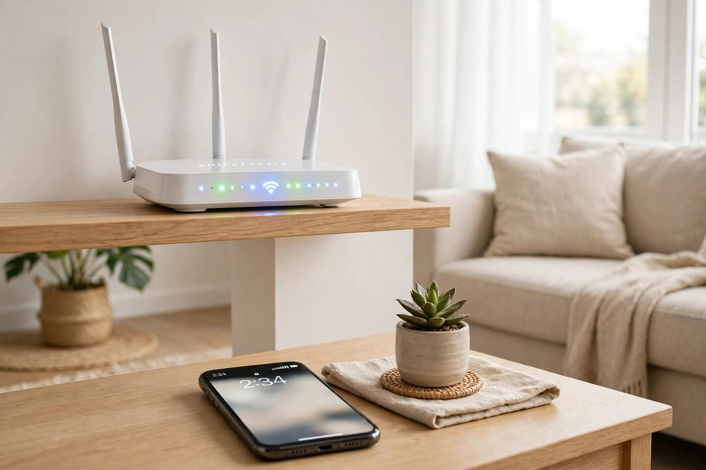

How to Improve Wi-Fi Signal at Home

A weak Wi-Fi signal is the most common reason a fast internet plan feels slow. Your connection into the house can be perfect, but if the wireless signal cannot reach your bedroom or your home office, your devices will crawl. The good news is that most Wi-Fi problems are caused by placement and settings, and many of them can be fixed for free.
Work through them in order, starting with the free fixes that take only a few minutes, and test your speed after each change so you know which one helped.
1. Move Your Router to a Central Spot
Wi-Fi spreads out from your router in all directions, so the best place for it is near the centre of your home, out in the open, at about waist to chest height. A router hidden in a cupboard, behind the TV or in a far corner forces the signal to travel through walls and furniture before it reaches you.
Keep it away from thick walls, metal objects, mirrors and large appliances, which block or reflect the signal. A shelf in a central hallway is usually far better than a corner of a back bedroom. Our router placement guide goes into detail on finding the best spot in different types of home.
2. Raise It Up and Keep It Clear
Signals travel better slightly downwards than upwards through floors, so place the router on a shelf or table rather than on the floor, and keep the area around it clear of books, boxes and other electronics.
If your router has external antennas, point one straight up and one at a slight angle. This spreads the signal both across the room and up to the floor above.
3. Switch Between the 2.4 GHz and 5 GHz Bands
Most modern routers broadcast two Wi-Fi bands. The 2.4 GHz band reaches further and passes through walls better, but it is slower and more crowded. The 5 GHz band is much faster but has a shorter range and struggles with thick walls.
Use 5 GHz in the same room as the router, for example for streaming or gaming, and 2.4 GHz in distant rooms where range matters more than speed. If your router combines both bands under one name, splitting them into two network names in its settings lets you choose the right one per device. Our guide to Wi-Fi vs ethernet explains when a cable beats either band.
4. Change to a Less Crowded Channel
Wi-Fi bands are divided into channels, and in busy neighbourhoods many routers sit on the same one, which causes interference and slows everyone down. A free Wi-Fi analyser app on your phone can show which channels are busy near you.
On 2.4 GHz, channels 1, 6 and 11 are the only ones that do not overlap, so pick the quietest of the three. On 5 GHz there are many more channels, so finding a quiet one is usually easy. Change the channel in your router's settings and test again.
5. Update Your Router's Firmware
Router makers release firmware updates that fix bugs and improve performance, but most routers never get updated. Log in to your router's admin page, check for an update, and set automatic updates on if your router offers them.
6. Replace an Old Router
A router that is five or more years old may not support modern Wi-Fi standards and can become the bottleneck even on a fast plan. A current Wi-Fi 6 router handles many devices at once far better than older models.
Before buying, check whether your internet provider will supply a newer router for free: many do when you renew or upgrade your plan.
7. Add an Extender or a Mesh System
If part of your home is simply too far from the router, an extender or a mesh system can help. A mesh system uses two or three units that work together as one network, and it is the best option for larger homes.
Place an extender or extra mesh unit halfway between the router and the dead zone, not inside the dead zone itself: it needs a decent signal to repeat. This is one of the few fixes on this list that costs money, so try the free ones first.
8. Reduce Interference From Other Devices
Microwave ovens, baby monitors, cordless phones and Bluetooth devices all share the 2.4 GHz band and can interfere with your Wi-Fi. Move your router away from the kitchen if you can. If a video call always stutters when the microwave is on, interference is the likely cause.
9. Limit the Devices on Your Network
Every connected device shares your Wi-Fi, including smart TVs, speakers, cameras and appliances you may have forgotten about. A camera uploading video to the cloud can quietly use a large share of your connection, so check your router's device list, disconnect anything you no longer use, and pause cloud backups while you need full speed.
If problems keep returning at the same time each day, the cause may be congestion on your provider's network rather than your Wi-Fi. Our guide to fixing slow internet covers those checks.
Frequently Asked Questions
Why is my Wi-Fi signal weak in one room?
The usual reasons are distance from the router, thick walls or floors in between, and interference from other networks or devices. Moving the router to a central, open spot or adding a mesh unit usually fixes it.
Does a Wi-Fi extender really help?
Yes, if it is placed correctly — halfway between the router and the weak area, where it still receives a good signal. An extender placed inside a dead zone has nothing to repeat and will not help.
Is 5 GHz better than 2.4 GHz?
5 GHz is faster but has a shorter range and passes through walls poorly. Use 5 GHz near the router and 2.4 GHz in distant rooms, or let a mesh system handle the choice for you.
Test Your Connection Now
Run a free speed test and see your real ping, download and upload speeds in under a minute.
Start Speed Test